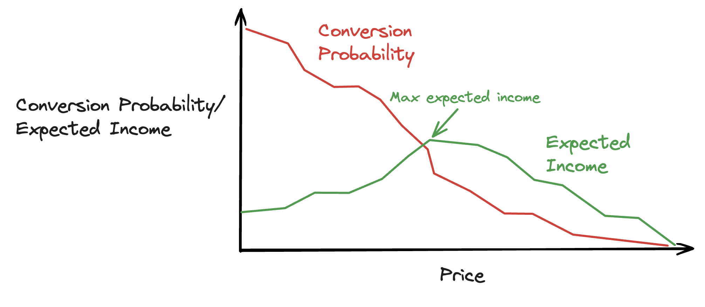

Dynamic Pricing
Introduction
In this project, the client was a market leader that was struggling to grow in the highly competitive home-move market. Their prices were generated through an equation taking into account information about the move (distance, item volumes etc.) and the rates offered by drivers. The business had been operational for a number of years and had an abundance of good quality data. They were interested to know whether they could use that data to optimise their pricing strategy.
I was able to build a pricing model which was able to identify price sensitivity on a quote-by-quote basis, and use this to calculate the best price to show each customer, with some pretty astounding results!
Theory
Dynamic pricing is a pricing strategy that allows prices to vary, depending on the situation. In modern times, these variations often utilise machine learning models which (if trained properly, and given enough good quality data) can capture complex relationships between key conversion indicators (customer behaviour, demographics, seasonality, and more) and their relationship to conversion (which in this case, is defined as a customer purchasing a product).
After learning these relationships, we can use such models to estimate the probability of a customer purchasing a product at different price points. In doing this, we can build a picture of what prices a customer (or group of customers) is likely to accept for a product, and the probability of acceptance.
This makes intuitive sense to me. When purchasing any product, each customer has a price range in their head that they are willing to accept. The goal of such models is to identify what that price range is and set prices near the top of that range.
This is an extremely powerful concept that allows a business to harness pricing to achieve whatever goals they may have. For example, If the goal is to maximise margin, we can identify the price point that returns the highest expected margin, which is the margin, multiplied by the probability of conversion. If we hope to grow market share, we can also choose to optimise for conversion, whilst minimising impact to the bottom line.
Objective
The goal of the project was to utilize the clients data to improve margin. To measure the performance of the model, we defined a set of KPIs and created a dashboard to track them. The KPIs used were the margin per quote, conversion rate. Ideally, we would like to maximise the margin per quote whilst maintaining a healthy conversion rate, which (in this industry) roughly equates to market share.
Challenges
Building a dynamic and data-driven pricing strategy is technically difficult because the right strategy may be unique for a particular product, business and industry. Additionally, each company may have different levels of data, which require different modelling techniques to achieve the best results. It may seem like using cutting edge machine learning models is always the answer, but in reality, when not given enough data these models can learn very complex relationships that exist only in the noisy data (not in reality). This is known as overfitting.
Deliverables
To integrate the project into the existing backend, an API was created, which took all features required by the model as inputs, calculated the conversion probability at different price points and worked out the expected margin from these two sets of values. The price point that gave the highest expected margin was then identified and returned to the backend. Each version of the API is containarised using docker, stored in a registry and is ran through AWS Lambda, which supports up to 1000 concurrent processes at any one time.
A dashboard was set up to continuously monitor the quality of the data going into the model, as well as the weekly performance of the model (to detect performance degradation).
A retraining pipeline was setup, which ran each month using the latest data. This allows the model to adapt to changing trends, such as an influx of customers with different behaviour or changing economic conditions. This pipeline was scheduled to run each month, but can also be triggered by changes to certain metrics, such as drops in model performance. Each trained model is versioned and stored in a database, which allows us to roll back to previous versions if any unexpected errors are identified.
Results
To test the model, 20% of website traffic was directed through the pricing API, and 80% went through a control group which received normal pricing. Testing both groups at the same time is essential as any seasonal or one-off events will affect both groups equally, resulting in more accurate results. These tests were ran for 2 months, until a statistically significant sample was drawn.
The test resulted in a 15% uplift in margin, for an 6% decrease in conversion probability.